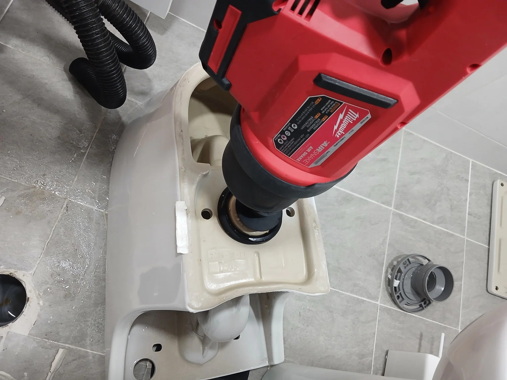

송파구 잠실동 변기막힘, 현장 도착 후 진단
석션으로 휴지죽을 다량 회수한 뒤에도 변기막힘이 해소되지 않음
1단계: 석션으로 휴지죽 회수
변기를 바로 탈거하기에 앞서 석션 작업을 진행했습니다. 물에 풀어진 휴지죽이 다량 빨려 나왔고, 회수통에도 휴지죽이 섞인 물이 모였습니다. 하지만 많이 회수했다는 것만으로 작업을 마칠 수는 없었습니다. 석션 이후에도 막힘이 남아 있어 추가 작업이 필요한 상태였습니다.

2단계: 변기 탈거 후 에어건으로 막힘 해결
석션만으로 해결되지 않아 변기를 탈거했습니다. 분리한 변기의 하부 배출구에 에어건을 대고 내부 막힘을 처리했습니다. 이번 현장은 석션으로 휴지죽을 회수하는 단계에서 끝나지 않고, 탈거 후 에어건 작업까지 진행해 막힘을 해결한 사례입니다.

작업 결과와 재발 방지 안내
석션으로 휴지죽을 많이 회수한 뒤에도 남아 있던 막힘은 변기 탈거 후 에어건 작업으로 해결했습니다. 회수된 휴지의 양과 실제 막힘 해소 여부를 구분해 살펴야 한다는 점이 이번 현장의 핵심입니다. 휴지는 한 번에 과도하게 넣지 말고, 물이 잘 내려가지 않는 상태에서는 반복해서 물을 내리지 않는 것이 좋습니다. 상담 시에는 휴지 사용량과 이미 시도한 조치를 함께 알려주세요.
최종 조치: 휴지죽 석션 회수 후 변기 탈거 및 에어건 작업으로 막힘 해결
현장 방문 전 확인하는 비용과 작업 범위
신라건축설비는 현장 증상과 배관 구조를 확인한 뒤 필요한 작업과 예상 비용을 안내합니다. 단순 관통으로 해결되는지, 배관내시경·석션·고압세척 또는 변기 탈거가 필요한지는 현장 상태에 따라 달라집니다. 출장비와 야간 작업비, 추가 장비 비용이 발생할 수 있는 경우 작업 전에 먼저 설명하고 동의를 받은 범위에서 진행합니다.
업체를 선택할 때 확인할 사항
무조건적인 ‘0원’ 표현보다 실제 작업 범위, 추가 비용 조건, 사용 장비와 사후 대응 기준을 확인하는 것이 중요합니다. 해결되지 않았을 때의 비용 기준과 작업 후 동일 증상 발생 시 점검 범위를 사전에 문의해두면 불필요한 분쟁을 줄일 수 있습니다.
송파구 변기막힘 자주 묻는 질문
석션으로 휴지죽을 많이 회수했는데 왜 변기를 탈거했나요?
이번 잠실동 현장에서는 석션으로 휴지죽을 다량 회수한 뒤에도 막힘이 남아 있었습니다. 변기를 탈거한 뒤 하부 배출구에 에어건을 대고 작업해 해결했습니다. 휴지죽이 많이 나왔다는 사실만으로 막힘이 모두 해소됐다고 판단하지 않았습니다.
변기 물이 안 내려가거나 역류하면 변기뚫는업체를 불러야 하나요?
물이 천천히 내려가거나 수위가 차오르고 변기역류가 반복되면 단순 뚫어뻥보다 전문 장비 점검이 필요한 경우가 있습니다. 현장에서는 증상과 배관 구조를 먼저 확인합니다.
변기 이물질 막힘은 변기를 탈거해야 하나요?
물티슈·청소포·플라스틱·음식물처럼 변기 트랩에 걸린 이물질은 위치에 따라 변기 탈거가 필요할 수 있습니다. 무조건 탈거하지 않고 먼저 막힘 위치를 판단합니다.
변기뚫는업체는 어떤 장비로 작업하나요?
현장 상태에 따라 석션, 에어건, 배관내시경, 변기 탈거 등을 사용합니다. 하부 오수관 문제라면 변기만 뚫는 작업보다 배관 구간 확인이 중요합니다.
변기막힘 비용은 어떻게 정해지나요?
단순 관통인지, 이물질 제거와 변기 탈거가 필요한지, 오수관이나 공용배관 작업이 필요한지에 따라 달라집니다. 추가 장비나 작업이 필요하면 진행 전에 범위와 비용을 안내합니다.
변기에서 냄새가 나거나 물이 자주 차오르는 것도 막힘과 관련 있나요?
악취나 수위 이상이 항상 막힘 때문인 것은 아니지만 배수 불량, 오수관 상태, 연결부 문제와 함께 나타날 수 있습니다. 반복되면 현장 점검으로 원인을 구분해야 합니다.
변기막힘 서울·경기 출동지역
신라건축설비는 송파구 잠실동 현장을 포함해 서울 25개 구와 경기도 31개 시·군의 배관 문제를 상담합니다. 현장 거리와 기사 배정 상황에 따라 출동 가능 여부를 먼저 안내드립니다.
서울 전 지역
강남구 · 강동구 · 강북구 · 강서구 · 관악구 · 광진구 · 구로구 · 금천구 · 노원구 · 도봉구 · 동대문구 · 동작구 · 마포구 · 서대문구 · 서초구 · 성동구 · 성북구 · 송파구 · 양천구 · 영등포구 · 용산구 · 은평구 · 종로구 · 중구 · 중랑구
경기도 주요 출동지역
수원시 · 용인시 · 고양시 · 화성시 · 성남시 · 부천시 · 남양주시 · 안산시 · 평택시 · 안양시 · 시흥시 · 파주시 · 김포시 · 의정부시 · 광주시 · 하남시 · 광명시 · 군포시 · 양주시 · 오산시 · 이천시 · 안성시 · 구리시 · 의왕시 · 포천시 · 양평군 · 여주시 · 동두천시 · 과천시 · 가평군 · 연천군